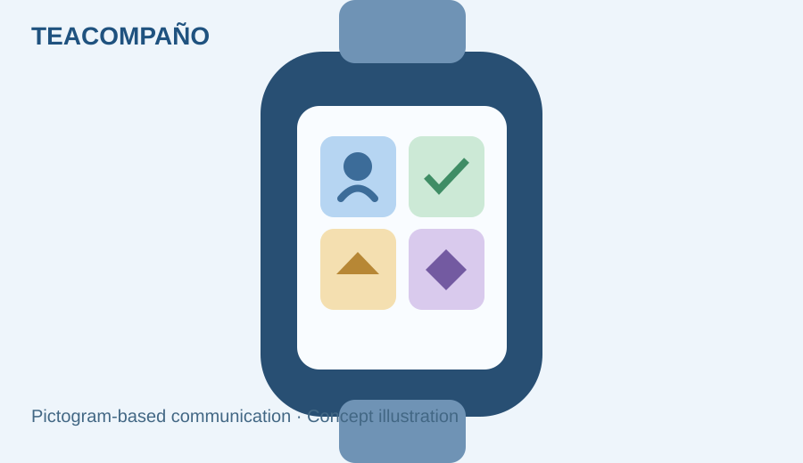

SOCIAL IMPACT · ENTREPRENEURSHIP · 2024
TEAcompaño — Assistive Communication Concept
A team innovation project combining accessible communication and wearable technology.
ITBA BootcampProduct InnovationSocial Impact

PROJECT OVERVIEW
Context and approach
Problem and solution
Developed in a team during the Trama / ITBA entrepreneurship bootcamp, TEAcompaño was conceived as software using pictograms on a smartwatch to support communication for autistic children.
From idea to business model
The team explored the user problem, built a feasible solution concept and worked on its business model, culminating in a public investor pitch.
Recognition
The project was among the top two in the Social and Environmental Impact category. This was a bootcamp concept, not a claim of a commercially launched product.